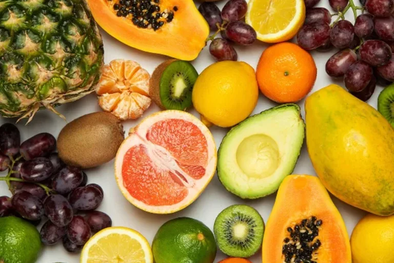

ჯანსაღი კვება — კვება, რომელიც ინარჩუნებს ან აუმჯობესებს საერთო ჯანმრთელობას. ჯანსაღი კვება უზრუნველყოფს ორგანიზმს აუცილებელი საკვები ნივთიერებებით: სითხით, მაკრონუტრიენტებით, როგორიცაა ცილა, მიკრონუტრიენტებით, როგორიცაა ვიტამინები, და ადეკვატური ბოჭკოთი და საკვები ენერგიით.[1][2]
ჯანსაღი კვება შეიძლება შეიცავდეს ხილს, ბოსტნეულს და მთლიან მარცვლეულს, და შეიძლება შეიცავდეს მცირე რაოდენობით ან არ შეიცავდეს ულტრა-დამუშავებულ საკვებს ან ტკბილ სასმელებს. ჯანსაღი კვების მოთხოვნები შეიძლება დაკმაყოფილდეს მცენარეული და ცხოველური წარმოშობის საკვებით, თუმცა ვეგანური დიეტის მიმდევრებს სჭირდებათ ვიტამინ B12-ის დამატებითი წყაროები.[3]
თუ გსურთ მეტი გაიგოთ ჯანსაღი კვების შესახებ დაგვიკავშირდით ნომერზე.